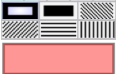

|
Sert à sélectionner le style de trait qui sera utilisé pour les futurs objets graphiques de type ligne. |
|
Sert à sélectionner l'épaisseur en pixels pour les futurs objets de style ligne |
|
La partie haute sert à sélectionner une des 16 couleurs prédéfinies de MathGraph32. L'ellipse de gauche Le curseur permet de choisir le niveau de transparence des surfaces créées. L’ellipse de droite rend compte de la transparence choisie sur la couleur choisie. |
|
Permet de choisir le style de point utilisé pour les futurs points créés. |
|
Permet de choisir le style de marque de segment utilisé pour les futures marques de segment créées. |
|
Permet de choisir le style de flèche utilisé pour les vecteurs et les marques d'angles orientées. |
|
Permet de choisir le style des marques d'angles . |
 |
Permet de choisir le style de remplissage des surfaces. L'icône en haut et à gauche correspond à un style de remplissage avec transparence. L'icône à sa droite correspond à un remplissage opaque. |
Permet de finir certaines actions. Elle n'apparaît que lors de l'utilisation de certains outils. |
A noter : L'outil palette  permet, en cliquant sur un objet, de modifier son style ou sa couleur.
permet, en cliquant sur un objet, de modifier son style ou sa couleur.